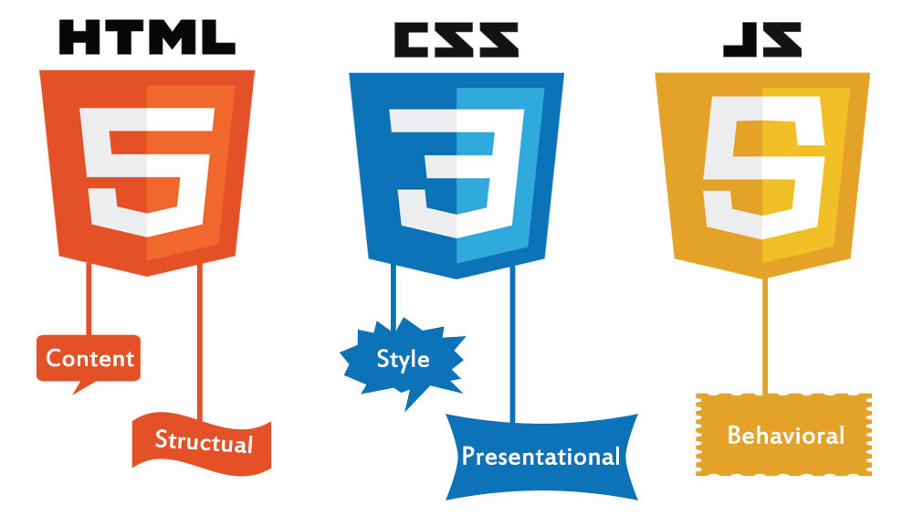

Catherine - dashboard web developer
Day 2 - CSS

This page was made using only HTML and CSS. This page includes inline, internal and external CSS styles.
W3 CSS online textbook
Required software
Github source code control | Brackets source code editor
Lesson progression
- What is a dashboard?
- What will I make?
- What is CSS and what part does it play in making web sites?
- Update your first web page with CSS using Brackets
- Save your source code to github
Future lessons
- Make your web pages look better faster using Materialize CSS Framework
- Intro to web programming using Javascript
- Mapping using Leaflet.js
- Advanced Mapping algorithm using Leaflet.js and online data API with axios
- Graphing using chart.js
- User Experience and making your dashboard look good